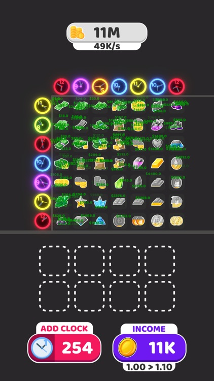
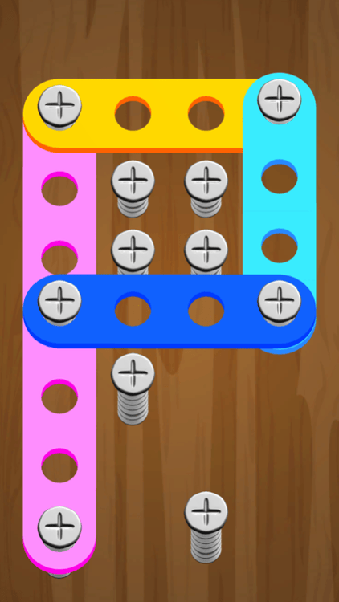
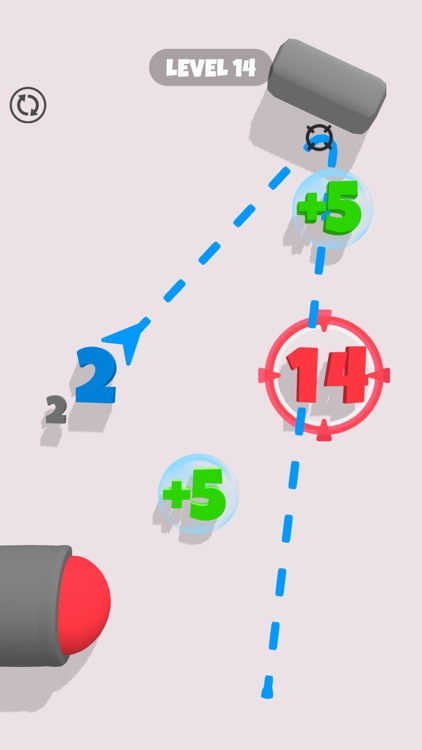

My approach to game development is rooted in system thinking - from engineering custom ECS
architectures and low-level graphics pipelines to building data-driven tools. Whether it's developing a
rendering backend in Vulkan or optimizing 10,000 units in motion, I love
solving complex problems through smart, high-performance code.
In this portfolio, I first highlight my ongoing foundational work in C++ game engine
development. I then showcase professionally published games and applications I
contributed to, followed by focused prototypes that demonstrate my technical explorations and system design
skills.
This is a GitHub repository where I document my personal journey of mastering C/C++ for game and engine
development. It serves as a transparent diary of my progress, learning resources, and hands-on
projects - showing why I chose to build foundational knowledge (both high and low level),
share code samples, and collaborate with anyone else following a similar path.
Solved exercises and projects from Introduction to Computing Systems: From Bits & Gates to
C/C++ & Beyond to build a solid low-level foundation (Solutions Repo).
Completed C Programming: A Modern Approach to strengthen my C fundamentals (Solutions
Repo).
Completed C++ Primer, 5th Edition chapter exercises to master modern C++ features and
idioms (Solutions Repo).
Applying core concepts from industry standards (e.g., Jason Gregory's Game Engine Architecture) to architect
low-level engine systems such as multithreading and asset management.
Currently applying these foundations to develop Primordial
Engine, a high-performance C++ engine utilizing custom ECS, low-level graphics APIs and
custom physics library.
Technologies
Assembly
C
C++
Children of Abyss
Freelance Contract | 2025
A 3D Sandbox Game Inspired by Tiny Glade, Focused on World Sculpting
Built a unified camera system supporting pan, rotation, and zoom with both touchscreen and keyboard/mouse
inputs.
Touch gestures and mouse/keyboard controls feed into a shared smoothing system for consistent
camera behavior.
Implemented a hill creation system that generates separate hill meshes from terrain's heightmap, avoiding
direct terrain modification.
Meshes are sampled from terrain heightmap and optimized for reuse, enabling efficient creation
of many independent hills.
Enabled real-time hill modification, allowing height and slope to be adjusted independently
post-creation.
Height and slope changes are applied per vertex with recalculated normals for smooth visuals.
Authored a custom HLSL shader for hills using unlit triplanar projection with
slope-based blending and optional overlay.
Supports sand/rock textures, seamless blending, and runtime overlay effects with tunable shader
parameters.
Analyzed existing Unity project structure and authored a detailed improvement report.
Recreated the render settings UI, improving user control and interaction with pop-ups, sliders, and
dynamic features based on new design.
Developed UI integration with procedural window generation system and detailed object metadata view.
Created an interactive screensaver that pulled render history and used a custom HLSL blur
shader for a polished presentation.
Technologies
C#
Unity
HLSL
Metahorse Unity
Hungri Games | 2023–2024
Horse-Racing RPG for Mobile Platforms
Developed core gameplay systems including in-game events, quests, and achievements with a data-driven
architecture using the Type design pattern.
Created a Google Sheets-based design workflow integrated into Unity for real-time balancing and
fast iteration.
Designed class progression, stats, and skill interactions entirely in spreadsheets and automated
the import pipeline via custom tools.
Technologies
C#
Unity
Stutengarden
Hungri Games | 2023–2024
Open-World Action-Adventure Game for Browser Platforms
Directed a 4-member team through full development of a 3D browser game.
Built scalable gameplay architecture using design patterns like Type, State,
and Observer.
Delivered polished movement through a custom 3D character controller and implemented systems like horse
catching and quest progression.
Applied various optimization techniques (e.g. texture compression, batching, material
instancing) to significantly reduce load times and runtime overhead.
Technologies
C#
Unity



Hypercasual Mobile Game Prototypes
Fauderfield | 2022–2023
Developed multiple hyper-casual titles in Unity, contributing to both programming and gameplay
design.
Designed and balanced levels with a focus on mobile gameplay pacing and user engagement.
Received internal training on algorithms and software design patterns; participated in ideation
sessions for new game concepts.
Technologies
C#
Unity
Real-Time Pathfinding with Local Avoidance
Personal Project | 2025
Simulated 10,000+ units navigating dynamically using a custom vector-field
pathfinding system.
Implemented local avoidance via physics-informed steering to prevent congestion.
Optimized data structures for performance using a custom ECS solution and Unity's
Native Collections.
Technologies
C#
Unity
GPU-Instanced Flipbook Shader
Personal Project | 2024
Designed a custom unlit flipbook shader using Texture2DArray for GPU-instanced sprite
animations.
Each instance selects its own frame count and texture index, enabling diverse animated visuals in a
single draw call.
Calculated UVs dynamically per frame and instance, supporting row-based flipbooks with adjustable column
limits.
Used alpha testing for rendering semi-transparent effects like particles or foliage efficiently.
Technologies
C#
Unity
HLSL
Procedural 2D Tile Generation
Personal Project | 2023
Implemented grid-based tile generation logic with modular control over biome and terrain types.
Enabled instant runtime generation and visual feedback using Unity's Tilemap package and custom
solutions.
Focused on clean code architecture for scalability in larger procedural world systems.
Technologies
C#
Unity
Turn-Based Grid A* Pathfinding
Personal Project | 2023
Developed A* pathfinding on a hexagonal grid with movement restrictions and
turn-based logic.
Implemented unit actions including movement, attack, and wait states.
Designed a flexible grid system supporting various tile types and obstacles.
Technologies
C#
Unity
Contact
If you want to work together or have any questions about my portfolio, feel free to reach out.